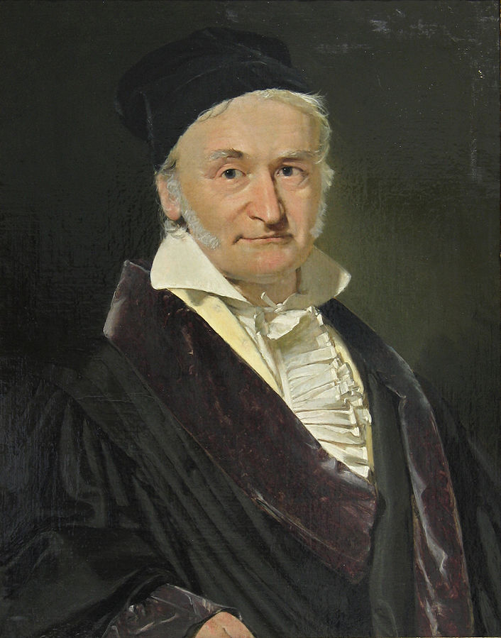

Abschnitt 1
Die Regressionsgerade
Ist der funktionale Zusammenhang zwischen zwei Grössen x und y linear und werden für diese Situation Daten gesammelt, so liegen die Punkte in der Praxis nicht exakt auf einer Geraden — Messfehler, Rundungen oder zufällige Schwankungen sorgen für eine Streuung um den eigentlichen linearen Zusammenhang.
Trotzdem möchte man aus den gestreuten Datenpunkten die zugrundeliegende lineare Beziehung rekonstruieren, um damit Vorhersagen treffen oder den Zusammenhang quantitativ beschreiben zu können. Gesucht ist also diejenige Gerade y = a·x + b, die die Punktwolke möglichst gut beschreibt. Dieses Vorgehen nennt man lineare Regression, und die gesuchte Gerade heisst Regressionsgerade.
Welche Gerade ist die passende? Drei Kandidaten für dieselben Datenpunkte.
Alle drei Geraden liegen «ungefähr» in der Punktwolke — aber welche passt am besten? Dafür brauchen wir ein genaues, rechenbares Mass für «passt gut».
Die Methode der kleinsten Fehlerquadrate
Um die sogenannte Regressionsgerade genau zu definieren und zu bestimmen, verwenden wir die Methode der kleinsten Fehlerquadrate. Dabei messen wir von jedem Datenpunkt den vertikalen Abstand zur Geraden und quadrieren diesen. Dieser Wert wird als Residuenquadrat bezeichnet. Die Gerade wird so bestimmt, dass die Summe aller Residuenquadrate minimal ist.
Zum Ausprobieren. Verändern Sie m und
b und beobachten Sie, wie die grauen Quadrate (und
ihre Summe) sich verändern.

{kind=link}
Diese Methode geht auf eine Idee des deutschen Mathematikers Carl Friedrich Gauss zurück und ist als Mass für die Abweichung besonders gut geeignet.
Definition: Regressionsgerade
Die Regressionsgerade zu vorgegebenen Punkten ist die Gerade mit der Eigenschaft, dass die Summe der Residuenquadrate minimal wird.
Beispielsweise hat die Regressionsgerade die Eigenschaft, dass sie automatisch durch den «Schwerpunkt» der Daten verläuft:
Satz: Schwerpunkt der Regressionsgeraden
Gegeben seien die Datenpunkte (x1,y1), (x2,y2), …, (xn,yn). Dann liegt der Punkt (x̄,ȳ) automatisch auf der entsprechenden Regressionsgeraden, wobei
x̄ = (x1+x2+…+xn) / n und ȳ = (y1+y2+…+yn) / n.
Die allgemeine Herleitung für die Berechnung der Regressionsgeraden ist etwas aufwändig — wir führen sie in Abschnitt 4 an einem konkreten Beispiel durch. Zunächst rechnen wir zwei kleine Beispiele von Hand, mit Hilfe der quadratischen Ergänzung.
Übungen: Von Hand rechnen
Gegeben sind die Punkte A(0,0), B(1,2) und C(3,1).
- Berechnen Sie die Summe der Residuenquadrate für die Gerade y = 9/10 · x − 1. (Hinweis: Das ist nicht die zugehörige Regressionsgerade.)
- Berechnen Sie eine Gleichung der Regressionsgeraden zu den Punkten A, B und C mit Hilfe der quadratischen Ergänzung. Berechnen Sie auch hier die Summe der Residuenquadrate.
Lösungsvorschlag
(a) Einsetzen der drei Punkte in die Gerade liefert die Residuen −1, 0.9 und −1.3; die Summe der Residuenquadrate ist damit 59/10 = 5.9.
(b) Wir berechnen zuerst den Schwerpunkt der Daten: x̄ = 4/3, ȳ = 1. Wegen des Schwerpunktsatzes verläuft die Regressionsgerade durch (4/3, 1), hat also die Form y = m·(x − 4/3) + 1. Setzt man die drei Punkte ein und quadriert, ergibt sich für die Summe der Residuenquadrate der Ausdruck 14/3 · m² − 2·m + 2, der (quadratische Ergänzung) bei m = 3/14 minimal wird. Damit lautet die Regressionsgerade
y = 3/14 · x + 5/7,
mit einer minimalen Summe der Residuenquadrate von 25/14 ≈ 1.7857.
Lösungsvorschlag (hand1.py)
Berechnen Sie eine Geradengleichung der Regressionsgeraden durch die Punkte A(0,0), B(2,3), C(3,4) und D(7,5), wieder mit Hilfe der quadratischen Ergänzung.
Lösungsvorschlag
Der Schwerpunkt der Daten ist (3, 3), die Regressionsgerade hat also die Form y = m·(x − 3) + 3. Die Summe der Residuenquadrate ist 26·m² − 34·m + 14, minimal bei m = 17/26. Damit lautet die Regressionsgerade
y = 17/26 · x + 27/26,
mit einer minimalen Summe der Residuenquadrate von 75/26 ≈ 2.8846.
Lösungsvorschlag (regman.py)
Ein grösseres Beispiel
Für nur drei oder vier Punkte lässt sich die Regressionsgerade noch von Hand mit quadratischer Ergänzung bestimmen. Sobald es um grössere Datenmengen geht, wird das schnell mühsam. Wir vermuten einen linearen Zusammenhang zwischen Körpergrösse (=x) und Körpermasse (=y). In einer Untersuchung haben sich die folgenden Daten ergeben (Körpergrösse in cm und Körpermasse in kg):
| x (cm) | 185 | 170 | 201 | 162 | 188 | 171 |
|---|---|---|---|---|---|---|
| y (kg) | 85 | 64 | 87 | 50 | 83 | 73 |
Streudiagramm. Körpergrösse gegen Körpermasse
Diese Punkte liegen (wenig überraschend) nicht auf einer Geraden. Die Frage ist nun, welche Gerade möglichst gut zu den Daten passt.
Und der Taschenrechner? Und GeoGebra?
Im gedruckten Skript wird diese Aufgabe auch mit dem
Taschenrechner (LinReg ax+b) und mit
GeoGebra
gelöst — beide sind für den Schulalltag praktisch und
durchaus empfehlenswert. Ein Video dazu finden Sie
hier. Diese
Webseite konzentriert sich aber auf die dritte Variante:
Python. Das lohnt sich vor allem bei grossen Datenmengen oder
wenn eine schöne, individuell gestaltete Grafik gefragt ist —
und ist Thema von Abschnitt 2.
Weitere Übungen
In einer Untersuchung wurde der Bremsweg bei einer Vollbremsung aus Tempo 100 km/h von Automobilen des gleichen Typs gemessen. Es stellte sich heraus, dass der benötigte Bremsweg mit dem Alter zunimmt. Es wurden folgende Daten erhoben:
| Alter (Jahre) | 4 | 7 | 11 | 2 |
|---|---|---|---|---|
| Bremsweg (m) | 50 | 80 | 70 | 45 |
Es wird nun vermutet, dass ein linearer Zusammenhang besteht. Führen Sie eine lineare Regression durch und extrapolieren Sie den erwarteten Bremsweg für
- neuwertige,
- 15 Jahre alte und
- 30 Jahre alte Automobile.
Lösungsvorschlag
- ≈ 41.68 m
- ≈ 90.60 m
- ≈ 139.51 m
Lösungsvorschlag (bremsweg-alter.py)
Silvan schenkt sich ein Glas Bier ein und misst für verschiedene Zeiten t (in Minuten) die Höhe der Schaumkrone h (in Millimetern). Dabei erhält er die folgende Tabelle:
| t (min) | 0 | 0.5 | 1 | 1.5 | 2 | 2.5 | 3 | 3.5 | 4 | 4.5 | 5 |
|---|---|---|---|---|---|---|---|---|---|---|---|
| h (mm) | 90 | 62 | 43 | 30 | 21 | 14 | 10 | 7 | 5 | 3 | 2 |
- Wir nehmen an, dass die Schaumhöhe exponentiell mit der Zeit abnimmt: h(t) = a · ek·t. Führen Sie mit diesen Daten eine Regression durch und bestimmen Sie damit die Parameter a und k auf 2 Nachkommastellen genau. (Hinweis: Logarithmieren Sie h(t) = a·ek·t — das linearisiert den Zusammenhang zwischen t und ln(h). Details dazu in Abschnitt 2.)
- Wie gross ist demnach die prozentuale Abnahme der Schaumkronenhöhe pro Minute?